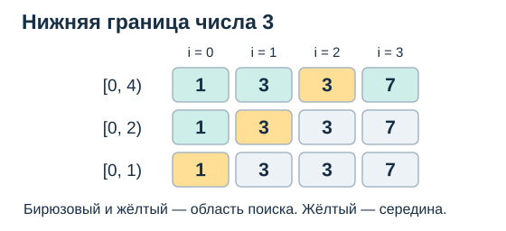

Двоичный поиск
Как найти первую тройку
В массиве [1, 3, 3, 7] число 3 встречается дважды. Если нужно узнать, сколько здесь троек, удобно найти две позиции.
| Граница | Что ищем | Индекс |
|---|---|---|
| Нижняя | Первый элемент, который больше или равен 3 | 1 |
| Верхняя | Первый элемент, который строго больше 3 | 3 |
Тройки занимают индексы от 1 включительно до 3 исключительно. Их количество равно 3 − 1 = 2. Для числа 4 обе границы равны 3, поэтому четвёрок в массиве нет. Если подходящего элемента нет, граница равна длине массива n. В пустом массиве она равна нулю.
Почему можно отбросить половину
Массив отсортирован по неубыванию. Одинаковые значения могут стоять рядом. Посмотрим на поиск нижней границы тройки. Все элементы с индексом меньше left строго меньше цели. Все элементы с индексом right и больше подходят. Если right равен длине массива, справа пока нет элементов. Осталось проверить участок [left, right).
| Проверяемый участок | Середина | Решение |
|---|---|---|
[0, 4) |
values[2] = 3 |
Тройка подходит. Ищем, есть ли подходящий элемент левее, right = 2 |
[0, 2) |
values[1] = 3 |
Так же передвигаем right на 1 |
[0, 1) |
values[0] = 1 |
Единица мала. Переходим к left = 1 |

Двоичный поиск
Найди индекс первого числа, которое больше или равно цели. Если цель равна 3, подойдут обе тройки. Ответом будет индекс первой из них. Если не подходит ни один элемент, ответом будет длина массива.
Какую границу передвинуть?
Проверяем индексы от l включительно до r исключительно. mid — индекс середины. Крайняя правая пунктирная клетка обозначает конец массива.
Твои шаги
Индекс середины позволяет сразу вычислить адрес элемента в непрерывном массиве C++. Для объекта размером 8 байтов элемент с индексом 2 начинается на 16 байтов дальше первого. В большом массиве последовательные проверки могут попасть в разные строки кэша, поэтому длительность одного шага бывает разной.
Теперь left == right == 1. Это индекс первой тройки. Для верхней границы тройку считаем слишком маленькой и продолжаем поиск справа от неё.
В C++ функция ниже с параметром find_upper = true ищет верхнюю границу. В Python показаны две отдельные функции. Обе границы находятся за O(log n) времени с O(1) дополнительной памяти.
C++
#include <cstddef>
#include <vector>
using std::size_t;
using std::vector;
using Int = long long;
using Numbers = vector<Int>;
size_t first_boundary(const Numbers& values, Int target, bool find_upper = false) {
size_t left = 0, right = values.size();
while (left < right) {
size_t middle = left + (right - left) / 2;
if (values[middle] < target || (find_upper && values[middle] == target)) {
left = middle + 1;
} else {
right = middle;
}
}
return left;
}
Тот же алгоритм на Python
def lower_bound(values, target):
left, right = 0, len(values)
while left < right:
middle = left + (right - left) // 2
if values[middle] < target:
left = middle + 1
else:
right = middle
return left
def upper_bound(values, target):
left, right = 0, len(values)
while left < right:
middle = left + (right - left) // 2
if values[middle] <= target:
left = middle + 1
else:
right = middle
return left
В стандартных библиотеках уже есть обе операции. В Python это bisect_left и bisect_right из модуля bisect. В C++ функции std::lower_bound и std::upper_bound возвращают итераторы. Чтобы получить индекс в векторе, вычти values.begin() из итератора. Для проверки наличия числа сначала убедись, что индекс меньше values.size(), и только затем сравни элемент с искомым числом.
Как найти минимальную вместимость
Нужно перевезти 11 одинаковых деталей не более чем за 3 рейса. Машина вместимостью 3 детали сделает четыре рейса. Машине вместимостью 4 хватит трёх. Ответ равен 4.
Двоичным поиском можно найти эту границу даже без готового массива. Если вместимости хватает, любая большая вместимость тоже подойдёт. Такое свойство называется монотонностью. Для проверяемой вместимости middle делим число деталей на неё нацело. Если остаток ненулевой, нужен ещё один рейс.
Число деталей item_count и лимит рейсов batch_limit должны быть положительными. Функция ищет вместимость от 1 до item_count. Верхняя граница заведомо подходит, потому что с такой вместимостью достаточно одного рейса. На каждом шаге мы уменьшаем диапазон примерно вдвое. При n = item_count время составляет O(log n), дополнительная память — O(1).
C++
using Int = long long;
Int min_batch_size(Int item_count, Int batch_limit) {
Int left = 1, right = item_count;
while (left < right) {
Int middle = left + (right - left) / 2;
Int batches_needed = item_count / middle + (item_count % middle != 0);
if (batches_needed <= batch_limit) right = middle;
else left = middle + 1;
}
return left;
}
Тот же алгоритм на Python
def min_batch_size(item_count, batch_limit):
left, right = 1, item_count
while left < right:
middle = left + (right - left) // 2
batches_needed = item_count // middle + (item_count % middle != 0)
if batches_needed <= batch_limit:
right = middle
else:
left = middle + 1
return left